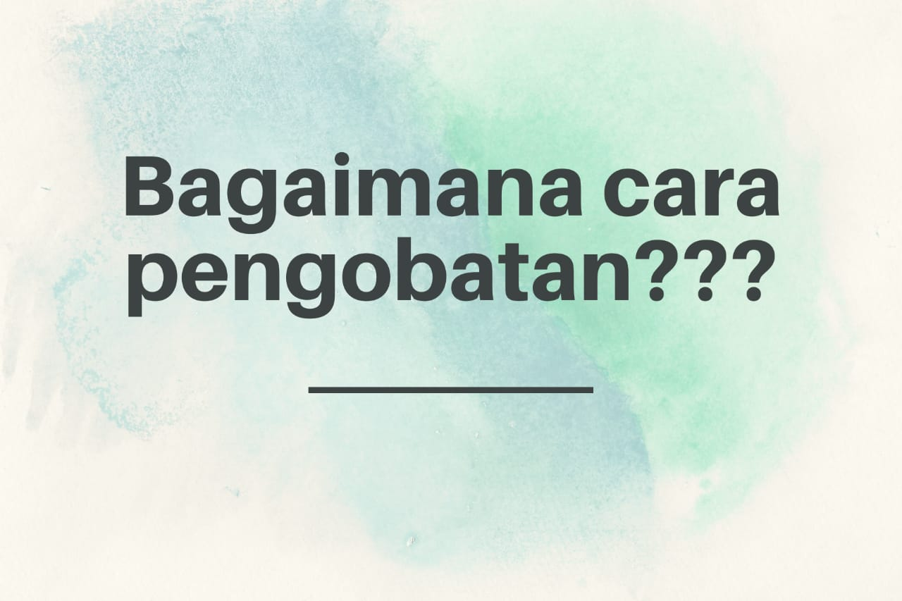
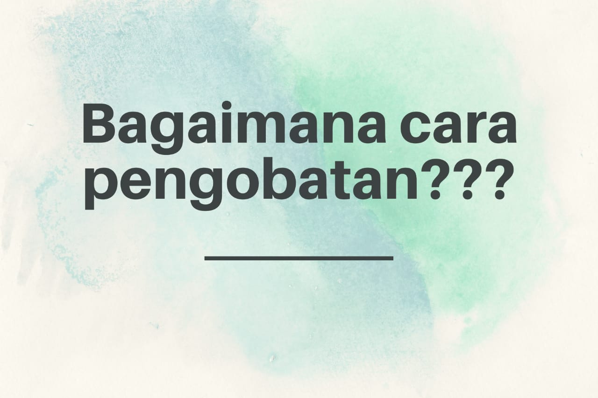

Pengobatan Bagi Pasien MERS-CoV
Health is our priority
 

MERS atau Middle East Respiratory Syndrome (MERS) merupakan suatu penyakit yang menginfeksi saluran pernapasan. Penyakit ini mudah menyebar melalui kontak dekat dengan penderita. Maka dari itu perlu tindakan preventif terhadap penyebaran penyakit ini. Selain itu, perlu adanya pengobatan untuk meminimalisir terjadinya kematian bagi para penderita MERS ini.
Menurut WHO (World Health Organization), belum ditemukan pengobatan spesifik atau vaksin untuk mengobati pasien yang terjangkit penyakit Middle East Respiratory Syndrome (MERS). Pengobatan suportif yang dilakukan hanya bertujuan untuk mengurangi gejala dan mencegah terjadinya komplikasi. Pengobatan suportif ini bermacam-macam bentuknya, tergantung gejala yang dialami penderita. Diantaranya :
Pengobatan terapeutik dapat dicapai melalui beberapa jenis obat antiviral seperti ribavirin dan interferon-α2a. Penggunaan ribavirin dan interferon-α2a ini harus mengikuti protokol dan dosis yang tepat.
Berikut adalah tabel dosis ribavirin dan interferon-α2a bagi penderita MERS.
| Agent | Dosing Regimen* | ||
|---|---|---|---|
| CrCl>50mL/min | CrCl 20-50mL/min | CrCl<20mL/min or on dialysis | |
| Ribavirin | 2000 mg po loading dose, follwed by 1200 mg po q8h for 4 days then 600 mg po q8h for 4-6 days. | 2000 mg po loading dose, follwed by 600 mg po q8h for 4 days then 200 mg po q8h for 4-6 days. | 2000 mg po loading dose, follwed by 200 mg po q6h for 4 days then 200 mg po q12h for 4-6 days. |
| Pegylated interferon- α 2a | 180 mcg subcutaneously once per week (up to 2 weeks). | ||
Kriteria yang diperlukan untuk mendapat obat ini, antara lain :